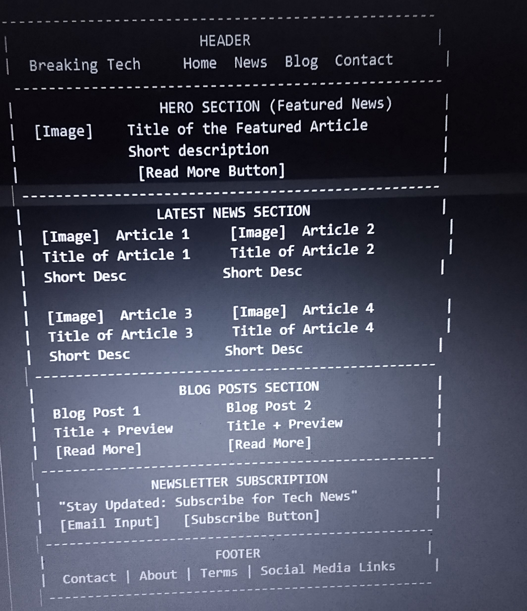
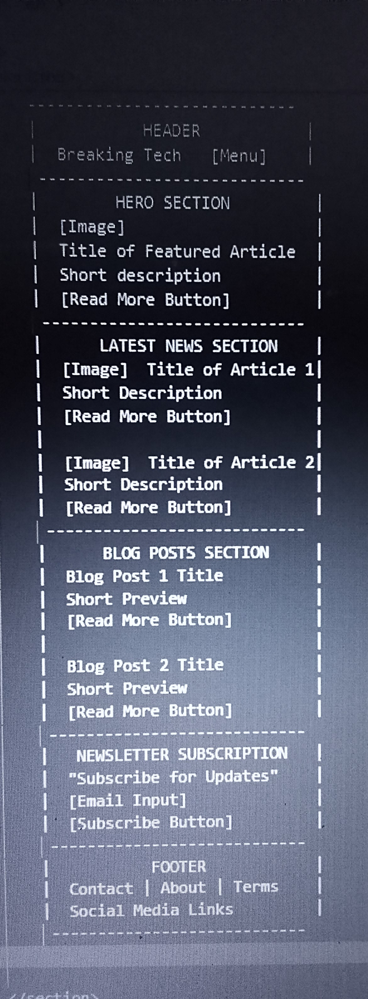

Site Plan
Site Name: Breaking Tech
Reason for the Site Name:
The name Breaking Tech was chosen to convey the site’s focus on delivering up-to-date and timely technology news, making it memorable and relevant.
Site Purpose
Breaking Tech
aims to provide the latest technology news, updates, and insights on emerging trends like AI, VR, and quantum computing. The site offers curated blog posts, tech analysis, and real-time news articles to keep users informed about the fast-evolving tech industry.
Scenarios
What are the latest AI developments?The visitor is looking for updates on the newest breakthroughs and applications in AI. The site offers news articles and blog posts that cover recent advancements and trends in artificial intelligence.
How is VR being used beyond gaming?The visitor wants to learn about the broader uses of VR technology. The site provides analysis and articles on VR’s impact in industries such as healthcare, education, and real estate.
Color Scheme for Breaking Tech
Typography for Breaking Tech
Wireframe
Large Screen wireframe
small Screen wireframe
